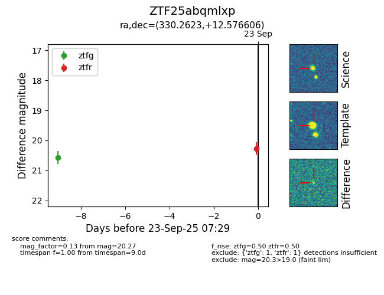

FINK: ZTF25abqmlxp
Lasair: ZTF25abqmlxp
ALeRCE: ZTF25abqmlxp
ZTF25abqmlxp (ztf,fink)
equatorial (ra, dec) = (330.2623,+12.57661)
galactic (l, b) = (71.2154,-32.69314)

last ztfg=20.57, ztfr=20.27
1 ztfg, 1 ztfr detections